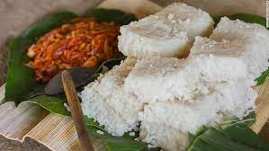

The Teardrop of India or Pearl of the Indian Ocean are among many nicknames for Sri Lanka. But a more accurate description of the gorgeous nation might be the Island of Rice and Curry.
European influence displays itself in Sri Lanka quite noticeably. Both the Portuguese and the Dutch consistently contributed to this part of clothing. The Portuguese and Dutch fashion from the 16th to 18th century introduced the Sinhalese nobility with magnificent sleeves, lace trim, and frills. Some details of the attire were born not without Indian influence during the Mughal era. For instance, the sarong tied in such a way that something resembles curvy trousers.